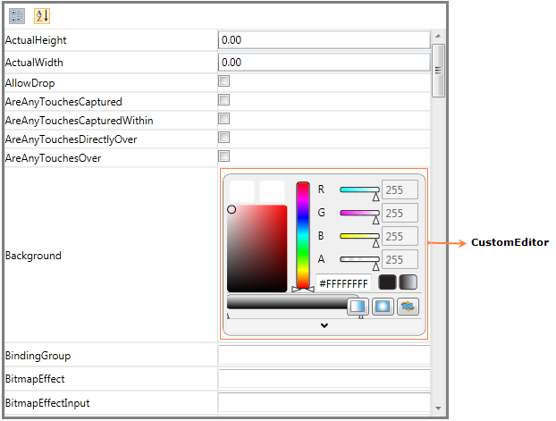

The PropertyGrid control supports several built-in editors, to give a good look and feel for the application (like in Expression Blend). Using CustomEditors or CategoryEditors. CustomEditor support enables you to set custom value editors for particular properties, instead of default editors.
Adding CustomEditor support to an Application
Using CustomEditorCollection property user can add custom editors to PropertyGrid control. To create CustomEditor user needs to implement ITypeEditor interface. In the below example for Background(Type – Brush), by default ColorPicker will be displayed as ValueEditor. By setting CustomEditor for Background, ColorEdit will be displayed as ValueEditor instead of ColorPicker.
|
[XAML]
<Grid x:Name="LayoutRoot" Background="White" HorizontalAlignment="Stretch" VerticalAlignment="Stretch">
|
|
[C#]
/// <summary>
|

Figure 822: PropertyGrid
Properties
Table 72: CustomEditor Table
|
Property |
Description |
Type |
Data Type |
Reference links |
|
CustomEditorCollection |
CustomEditor support enables you to set custom value editors for particular properties, instead of default editors. |
DependencyProperty |
CustomEditorCollection |
Sample Link
1. Select Start -> Programs -> Syncfusion -> Essential Studio x.x.xx -> Dashboard.
2. Select Run Locally Installed Samples in WPF Button.
3. Now expand the PropertyGrid treeview item in the Sample Browser.
4. Choose any one of the samples listed under it to launch.